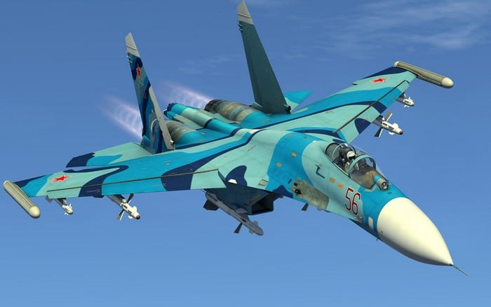

Новый самолёт луганск20
Сегодня презентовали новый самолёт Луганск20. Это сверхзвуковой самолёт с тремя полуядерными ракетами, однако это не бомбардировщик. Владимир Черниенко лично пожал руку инжерам и всему заводу который собирал его, и также заявил что за неделю будет произведено 10 000 таких.
Эксперты говорят что это одно из самых опасных оружий против угнетателей.
